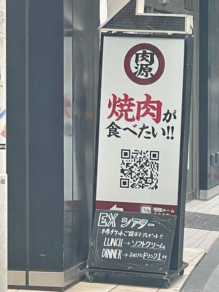
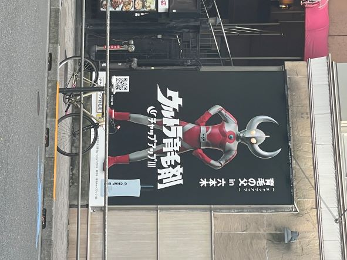
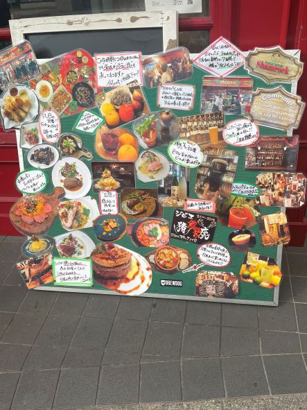

第2回
観察(看板）
１．肉源の看板

「焼肉が食べたい‼」という文がお店の名前よりも先に目に入る。
何のQRコードかわからないのでつい読み取りたくなる。
読み取るとお店のHPに飛ぶことができ、メニューが見れお店に入りやすい。
2.育毛剤の広告看板

誰もが知っているキャラがいて目に入りやすくなっている。
無駄な文字はなく伝えたいことがはっきりわかる。
キャラの影響で力強い印象を与え,キャラと文を組み合わせていて覚えやすい。
3.レストランの店前のポップ

料理の写真がボードいっぱいにあり、何があるのかしっかり見たくなる。
⁉やここでしかなどと書くことで店内で食事したくなるような文。
ごちゃごちゃしているように見えるが、カラフルで目を引く看板である。
3枚とも2022.10.08自分で撮影 （六本木）